Last updated: 2026-03-25
Checks: 7 0
Knit directory: dickinson_power/
This reproducible R Markdown analysis was created with workflowr (version 1.7.2). The Checks tab describes the reproducibility checks that were applied when the results were created. The Past versions tab lists the development history.
Great! Since the R Markdown file has been committed to the Git repository, you know the exact version of the code that produced these results.
Great job! The global environment was empty. Objects defined in the global environment can affect the analysis in your R Markdown file in unknown ways. For reproduciblity it’s best to always run the code in an empty environment.
The command set.seed(20260107) was run prior to running
the code in the R Markdown file. Setting a seed ensures that any results
that rely on randomness, e.g. subsampling or permutations, are
reproducible.
Great job! Recording the operating system, R version, and package versions is critical for reproducibility.
Nice! There were no cached chunks for this analysis, so you can be confident that you successfully produced the results during this run.
Great job! Using relative paths to the files within your workflowr project makes it easier to run your code on other machines.
Great! You are using Git for version control. Tracking code development and connecting the code version to the results is critical for reproducibility.
The results in this page were generated with repository version 474aa52. See the Past versions tab to see a history of the changes made to the R Markdown and HTML files.
Note that you need to be careful to ensure that all relevant files for
the analysis have been committed to Git prior to generating the results
(you can use wflow_publish or
wflow_git_commit). workflowr only checks the R Markdown
file, but you know if there are other scripts or data files that it
depends on. Below is the status of the Git repository when the results
were generated:
Ignored files:
Ignored: .DS_Store
Ignored: .Rhistory
Ignored: .Rproj.user/
Ignored: analysis/.DS_Store
Ignored: analysis_to-fix/.DS_Store
Ignored: data/.DS_Store
Ignored: data/FY25 Main Meter Data.xlsx
Ignored: data/building_list_FY25_updated.xlsx
Ignored: data/graph_data_life_exp.csv
Ignored: data/housing_counts.csv
Ignored: keys/.DS_Store
Ignored: output/annual_kwh.csv
Ignored: output/building_check.csv
Ignored: output/building_check.xlsx
Ignored: output/daily_kwh.csv
Ignored: output/kwh_academic_2026-03-16.csv
Ignored: output/kwh_academic_2026-03-17.csv
Ignored: output/kwh_academic_2026-03-18.csv
Ignored: output/kwh_academic_2026-03-22.csv
Ignored: output/kwh_academic_2026-03-23.csv
Ignored: output/kwh_academic_2026-03-25.csv
Ignored: output/kwh_annual.csv
Ignored: output/kwh_annual_2026-03-04.csv
Ignored: output/kwh_annual_2026-03-12.csv
Ignored: output/kwh_annual_2026-03-16.csv
Ignored: output/kwh_annual_2026-03-17.csv
Ignored: output/kwh_annual_2026-03-18.csv
Ignored: output/kwh_annual_2026-03-22.csv
Ignored: output/kwh_annual_2026-03-23.csv
Ignored: output/kwh_annual_2026-03-25.csv
Ignored: output/kwh_annual_20260225.csv
Ignored: output/kwh_annual_20260226.csv
Ignored: output/kwh_daily.csv
Ignored: output/kwh_daily_2026-03-04.csv
Ignored: output/kwh_daily_2026-03-12.csv
Ignored: output/kwh_daily_2026-03-16.csv
Ignored: output/kwh_daily_2026-03-17.csv
Ignored: output/kwh_daily_2026-03-18.csv
Ignored: output/kwh_daily_2026-03-22.csv
Ignored: output/kwh_daily_2026-03-23.csv
Ignored: output/kwh_daily_2026-03-25.csv
Ignored: output/kwh_daily_20260225.csv
Ignored: output/kwh_daily_20260226.csv
Ignored: output/kwh_main_annual.csv
Ignored: output/kwh_main_daily.csv
Note that any generated files, e.g. HTML, png, CSS, etc., are not included in this status report because it is ok for generated content to have uncommitted changes.
These are the previous versions of the repository in which changes were
made to the R Markdown (analysis/main_meter_model.Rmd) and
HTML (docs/main_meter_model.html) files. If you’ve
configured a remote Git repository (see ?wflow_git_remote),
click on the hyperlinks in the table below to view the files as they
were in that past version.
| File | Version | Author | Date | Message |
|---|---|---|---|---|
| Rmd | 0e3911f | maggiedouglas | 2026-03-23 | update data wrangling and add model tab and main meter regression example |
| html | 0e3911f | maggiedouglas | 2026-03-23 | update data wrangling and add model tab and main meter regression example |
| Rmd | d9d0396 | maggiedouglas | 2026-03-12 | update scripts to show Lindsey options |
This script is to work up example analyses for the modeling portion of the course, using the Main Meter as an example.
library(tidyverse)── Attaching core tidyverse packages ──────────────────────── tidyverse 2.0.0 ──
✔ dplyr 1.2.0 ✔ readr 2.2.0
✔ forcats 1.0.1 ✔ stringr 1.6.0
✔ ggplot2 4.0.2 ✔ tibble 3.3.1
✔ lubridate 1.9.5 ✔ tidyr 1.3.2
✔ purrr 1.2.1
── Conflicts ────────────────────────────────────────── tidyverse_conflicts() ──
✖ dplyr::filter() masks stats::filter()
✖ dplyr::lag() masks stats::lag()
ℹ Use the conflicted package (<http://conflicted.r-lib.org/>) to force all conflicts to become errorslibrary(segmented) # for segmented regression Loading required package: MASS
Attaching package: 'MASS'
The following object is masked from 'package:dplyr':
select
Loading required package: nlme
Attaching package: 'nlme'
The following object is masked from 'package:dplyr':
collapselibrary(tseries) # for time series, including autocorrelationRegistered S3 method overwritten by 'quantmod':
method from
as.zoo.data.frame zoo library(visreg)
library(lmtest) # to test for autocorrelationLoading required package: zoo
Attaching package: 'zoo'
The following objects are masked from 'package:base':
as.Date, as.Date.numericlibrary(car) # for Levene's TestLoading required package: carData
Attaching package: 'car'
The following object is masked from 'package:dplyr':
recode
The following object is masked from 'package:purrr':
somedaily <- read.csv("./output/kwh_daily_2026-03-04.csv", strip.white = TRUE)
key <- read.csv("./keys/temp_by_date.csv")
str(daily)'data.frame': 38690 obs. of 10 variables:
$ type : chr "Res Hall - M" "Res Hall - M" "Res Hall - M" "Res Hall - M" ...
$ meter : chr "Individual" "Individual" "Individual" "Individual" ...
$ NAME : chr "100 S. West St." "100 S. West St." "100 S. West St." "100 S. West St." ...
$ days_perc: num 100 100 100 100 100 100 100 100 100 100 ...
$ sqft : int 7190 7190 7190 7190 7190 7190 7190 7190 7190 7190 ...
$ occupants: num 19 19 19 19 19 19 19 19 19 19 ...
$ period : chr "Summer" "Summer" "Summer" "Summer" ...
$ date : chr "2024-07-01" "2024-07-02" "2024-07-03" "2024-07-04" ...
$ kwh : num 98.5 106.7 122.8 135.9 138 ...
$ ave_temp : int 69 73 78 81 84 86 84 84 86 87 ...str(key)'data.frame': 365 obs. of 4 variables:
$ date : chr "7/18/24" "7/19/24" "7/20/24" "7/21/24" ...
$ ave_temp: int 78 76 78 81 75 78 80 79 76 76 ...
$ cdd_65 : num 14.1 12.1 14.2 16.5 11.6 14.6 15.6 14.5 12.7 11 ...
$ hdd_65 : num 0 0 0 0 0 0 0 0 0 0.2 ...daily_date <- daily %>%
mutate(date = ymd(date),
month = month(date, label = TRUE),
day = wday(date, label = TRUE),
week = week(date),
day_type = ifelse(day %in% c("Sat","Sun"), "Weekend","Weekday")) %>%
dplyr::select(type, NAME, period, date, month, week, day, day_type, kwh, ave_temp)
key_date <- key %>%
mutate(date = mdy(date))
daily_main <- filter(daily_date, NAME == "Main Meter") %>%
left_join(key_date, by = c("ave_temp", "date")) %>%
mutate(temp_cat = ifelse(ave_temp > 65, "heating","cooling"),
period = ifelse(period %in% c("Spring","Fall"), "Academic", period))str(daily_date)'data.frame': 38690 obs. of 10 variables:
$ type : chr "Res Hall - M" "Res Hall - M" "Res Hall - M" "Res Hall - M" ...
$ NAME : chr "100 S. West St." "100 S. West St." "100 S. West St." "100 S. West St." ...
$ period : chr "Summer" "Summer" "Summer" "Summer" ...
$ date : Date, format: "2024-07-01" "2024-07-02" ...
$ month : Ord.factor w/ 12 levels "Jan"<"Feb"<"Mar"<..: 7 7 7 7 7 7 7 7 7 7 ...
$ week : num 27 27 27 27 27 27 27 28 28 28 ...
$ day : Ord.factor w/ 7 levels "Sun"<"Mon"<"Tue"<..: 2 3 4 5 6 7 1 2 3 4 ...
$ day_type: chr "Weekday" "Weekday" "Weekday" "Weekday" ...
$ kwh : num 98.5 106.7 122.8 135.9 138 ...
$ ave_temp: int 69 73 78 81 84 86 84 84 86 87 ...str(daily_main)'data.frame': 365 obs. of 13 variables:
$ type : chr "Main Meter" "Main Meter" "Main Meter" "Main Meter" ...
$ NAME : chr "Main Meter" "Main Meter" "Main Meter" "Main Meter" ...
$ period : chr "Summer" "Summer" "Summer" "Summer" ...
$ date : Date, format: "2024-07-01" "2024-07-02" ...
$ month : Ord.factor w/ 12 levels "Jan"<"Feb"<"Mar"<..: 7 7 7 7 7 7 7 7 7 7 ...
$ week : num 27 27 27 27 27 27 27 28 28 28 ...
$ day : Ord.factor w/ 7 levels "Sun"<"Mon"<"Tue"<..: 2 3 4 5 6 7 1 2 3 4 ...
$ day_type: chr "Weekday" "Weekday" "Weekday" "Weekday" ...
$ kwh : num 33919 35412 38561 42526 45794 ...
$ ave_temp: int 69 73 78 81 84 86 84 84 86 87 ...
$ cdd_65 : num 6 9.6 13.5 16.2 20.1 22.2 19 19.7 22.4 22.6 ...
$ hdd_65 : num 0 1.3 0 0 0 0 0 0 0 0 ...
$ temp_cat: chr "heating" "heating" "heating" "heating" ...mod_day <- lm(kwh ~ day_type, data = daily_main)
mod_period <- lm(kwh ~ period, data = daily_main)
plot(mod_day)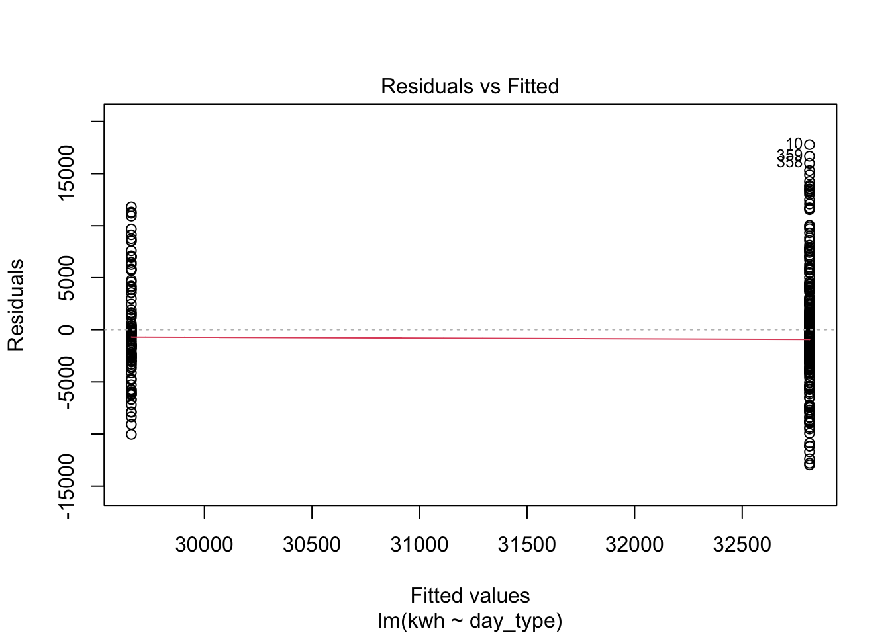
| Version | Author | Date |
|---|---|---|
| 0e3911f | maggiedouglas | 2026-03-23 |
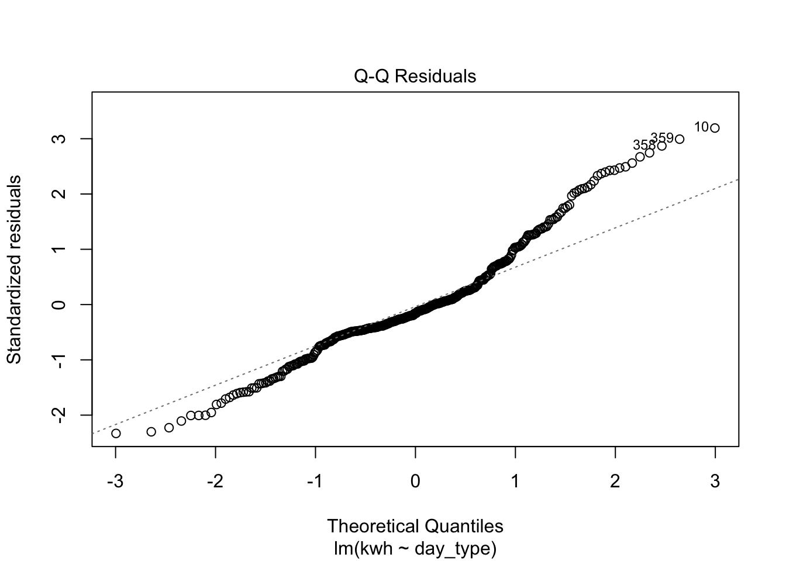
| Version | Author | Date |
|---|---|---|
| 0e3911f | maggiedouglas | 2026-03-23 |
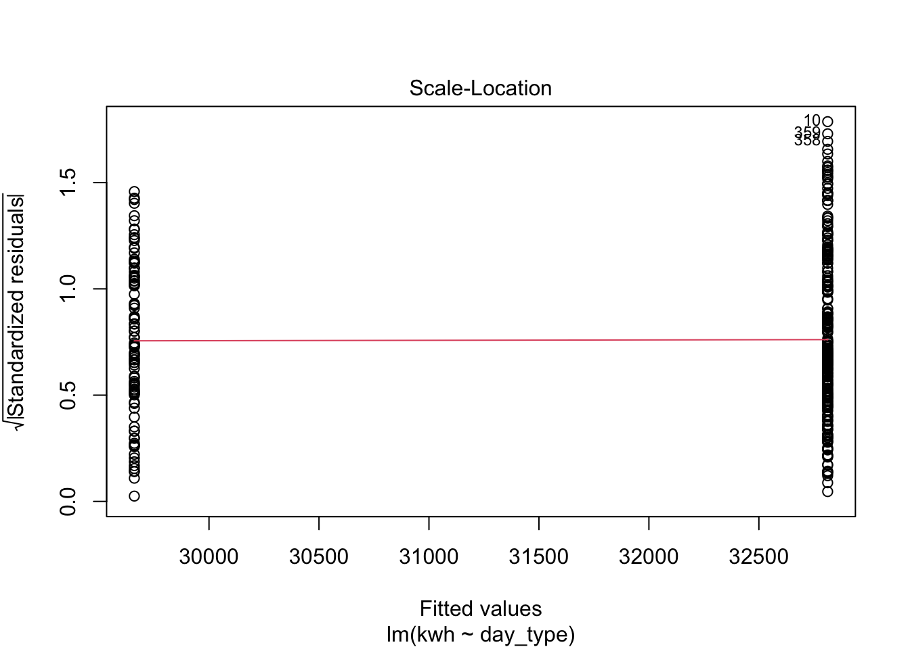
| Version | Author | Date |
|---|---|---|
| 0e3911f | maggiedouglas | 2026-03-23 |
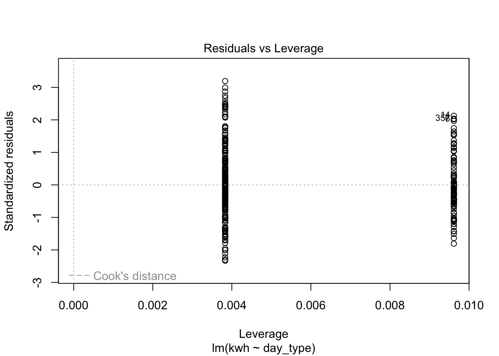
| Version | Author | Date |
|---|---|---|
| 0e3911f | maggiedouglas | 2026-03-23 |
boxplot(mod_day$residuals ~ daily_main$day)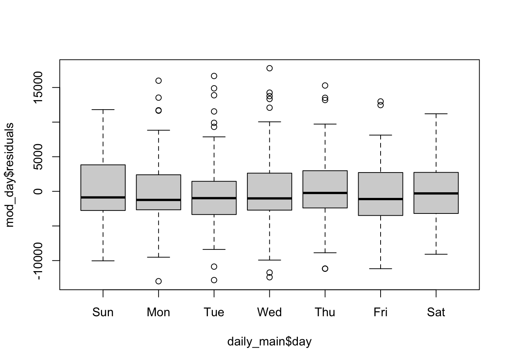
| Version | Author | Date |
|---|---|---|
| 0e3911f | maggiedouglas | 2026-03-23 |
boxplot(mod_day$residuals ~ daily_main$period)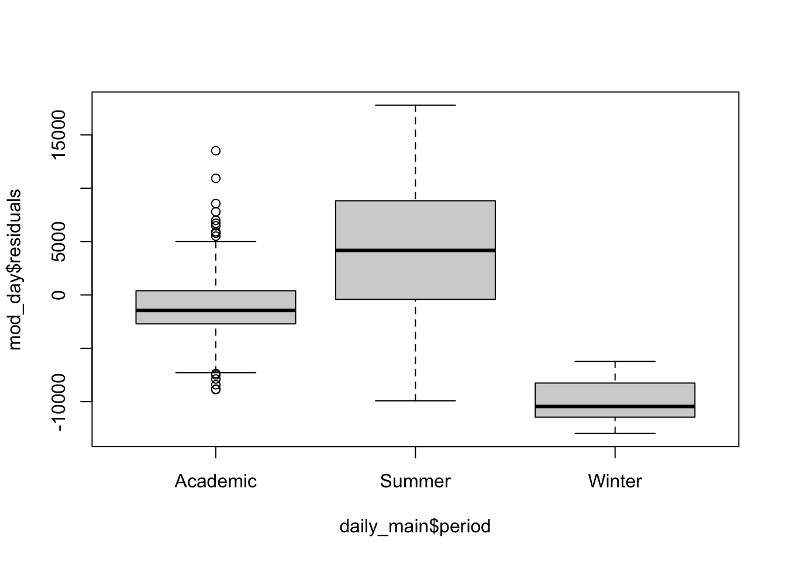
| Version | Author | Date |
|---|---|---|
| 0e3911f | maggiedouglas | 2026-03-23 |
hist(mod_day$residuals, breaks = 30) 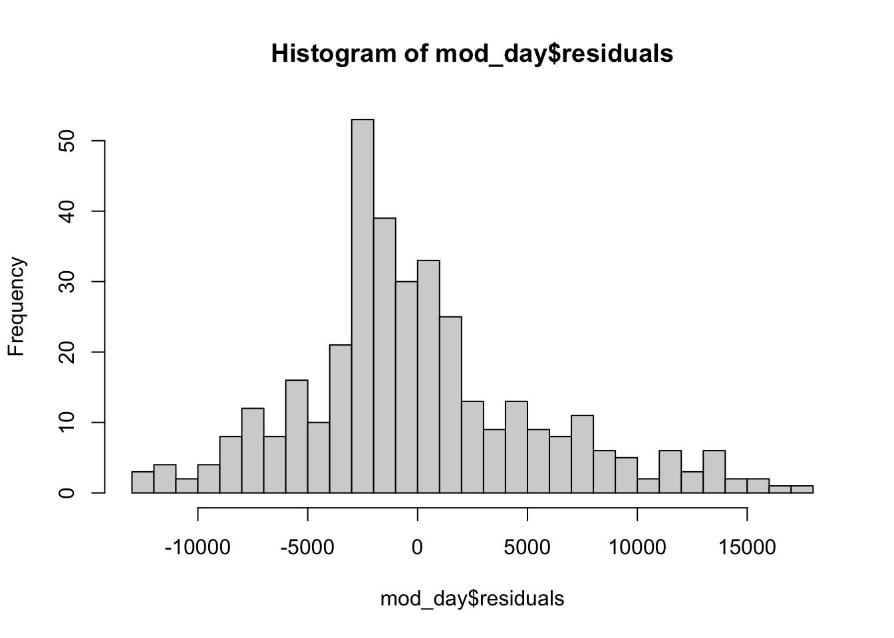
| Version | Author | Date |
|---|---|---|
| 0e3911f | maggiedouglas | 2026-03-23 |
leveneTest(mod_day$residuals ~ daily_main$day)Levene's Test for Homogeneity of Variance (center = median)
Df F value Pr(>F)
group 6 0.2677 0.9518
358 leveneTest(mod_day$residuals ~ daily_main$period)Warning in leveneTest.default(y = y, group = group, ...): group coerced to
factor.Levene's Test for Homogeneity of Variance (center = median)
Df F value Pr(>F)
group 2 53.796 < 2.2e-16 ***
362
---
Signif. codes: 0 '***' 0.001 '**' 0.01 '*' 0.05 '.' 0.1 ' ' 1kruskal.test(kwh ~ day_type, data = daily_main)
Kruskal-Wallis rank sum test
data: kwh by day_type
Kruskal-Wallis chi-squared = 28.266, df = 1, p-value = 1.057e-07summary(mod_day)
Call:
lm(formula = kwh ~ day_type, data = daily_main)
Residuals:
Min 1Q Median 3Q Max
-12981.5 -2867.9 -880.7 2476.9 17784.1
Coefficients:
Estimate Std. Error t value Pr(>|t|)
(Intercept) 32812.7 345.4 94.995 < 2e-16 ***
day_typeWeekend -3152.2 647.1 -4.871 1.66e-06 ***
---
Signif. codes: 0 '***' 0.001 '**' 0.01 '*' 0.05 '.' 0.1 ' ' 1
Residual standard error: 5580 on 363 degrees of freedom
Multiple R-squared: 0.06136, Adjusted R-squared: 0.05877
F-statistic: 23.73 on 1 and 363 DF, p-value: 1.659e-06anova(mod_day)Analysis of Variance Table
Response: kwh
Df Sum Sq Mean Sq F value Pr(>F)
day_type 1 7.3893e+08 738931117 23.729 1.659e-06 ***
Residuals 363 1.1304e+10 31140242
---
Signif. codes: 0 '***' 0.001 '**' 0.01 '*' 0.05 '.' 0.1 ' ' 1visreg(mod_day)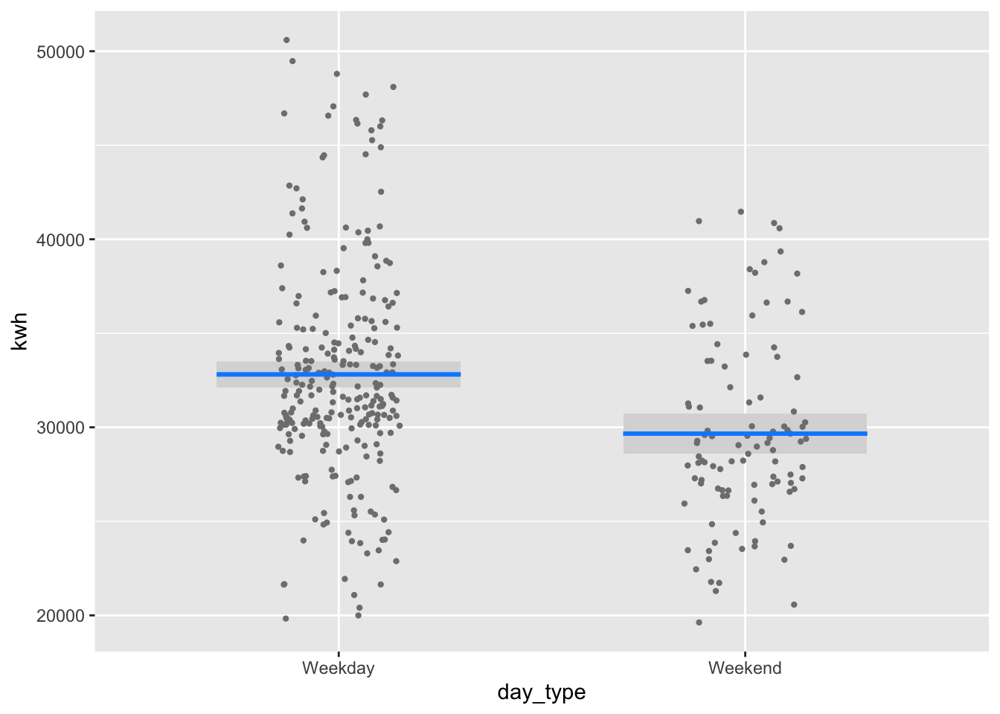
| Version | Author | Date |
|---|---|---|
| 0e3911f | maggiedouglas | 2026-03-23 |
acf(residuals(mod_day), lag.max = 365)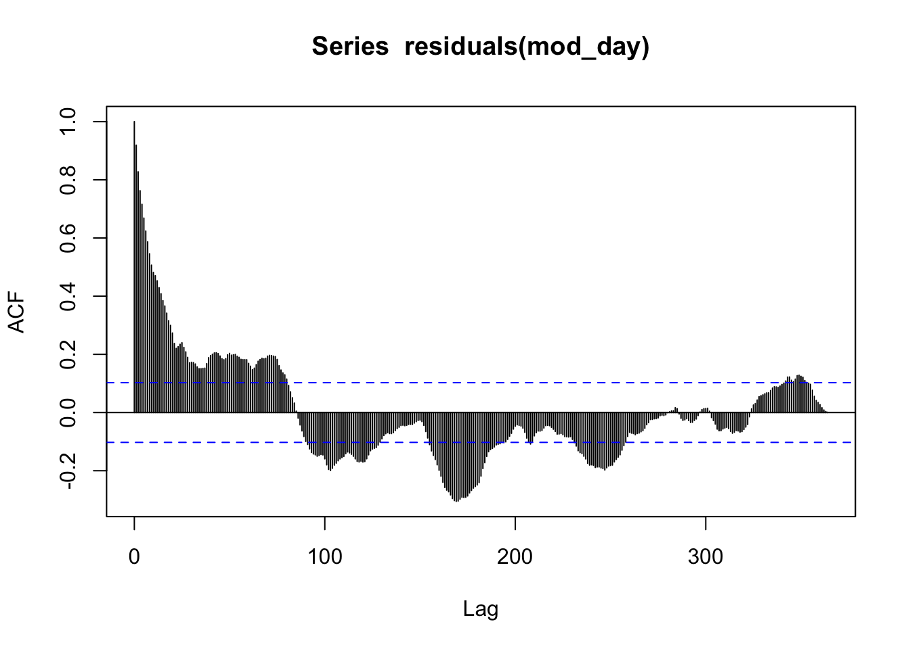
| Version | Author | Date |
|---|---|---|
| 0e3911f | maggiedouglas | 2026-03-23 |
daily_ts <- daily_main %>%
dplyr::select(kwh) %>%
as.ts(daily_main, start = c(2024,1), frequency = 365)
acf(daily_ts, lag.max = 365)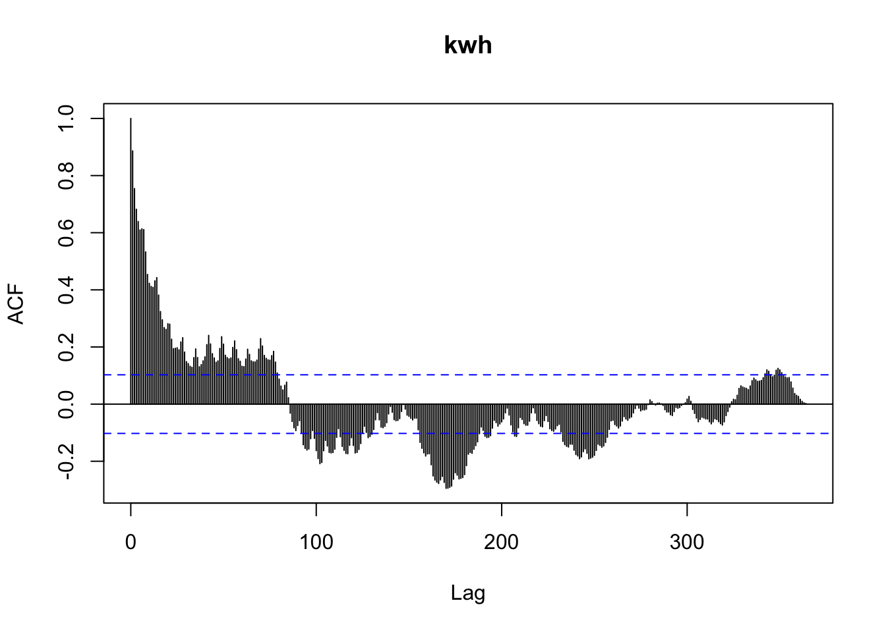
| Version | Author | Date |
|---|---|---|
| 0e3911f | maggiedouglas | 2026-03-23 |
acf(daily_ts, lag.max = 30)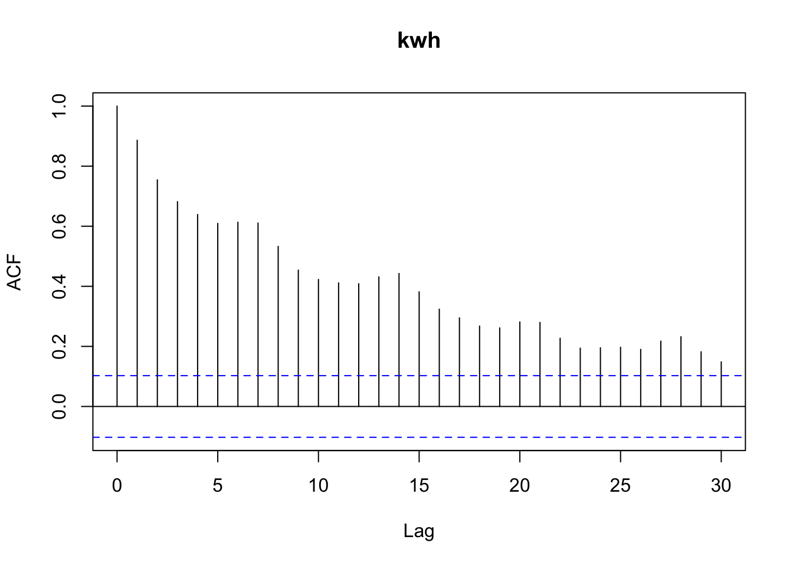
| Version | Author | Date |
|---|---|---|
| 0e3911f | maggiedouglas | 2026-03-23 |
daily_main$day <- as.factor(daily_main$day)
mod <- lm(kwh ~ period + day_type + ave_temp, data = daily_main)
seg.mod <- segmented(mod, seg.Z = ~ ave_temp, psi = 65)
summary(seg.mod)
***Regression Model with Segmented Relationship(s)***
Call:
segmented.lm(obj = mod, seg.Z = ~ave_temp, psi = 65)
Estimated Break-Point(s):
Est. St.Err
psi1.ave_temp 57.632 0.496
Coefficients of the linear terms:
Estimate Std. Error t value Pr(>|t|)
(Intercept) 34278.0 609.6 56.229 < 2e-16 ***
periodSummer -3748.3 349.0 -10.741 < 2e-16 ***
periodWinter -8002.4 560.7 -14.272 < 2e-16 ***
day_typeWeekend -3194.7 245.1 -13.036 < 2e-16 ***
ave_temp -100.3 14.6 -6.871 2.84e-11 ***
U1.ave_temp 857.3 27.6 31.058 NA
---
Signif. codes: 0 '***' 0.001 '**' 0.01 '*' 0.05 '.' 0.1 ' ' 1
Residual standard error: 2113 on 358 degrees of freedom
Multiple R-Squared: 0.8673, Adjusted R-squared: 0.8651
Boot restarting based on 6 samples. Last fit:
Convergence attained in 3 iterations (rel. change 1.2937e-11)anova(seg.mod)Analysis of Variance Table
Response: kwh
Df Sum Sq Mean Sq F value Pr(>F)
period 2 3526884948 1763442474 395.12 <2e-16 ***
day_type 1 716851700 716851700 160.62 <2e-16 ***
ave_temp 1 1837377062 1837377062 411.68 <2e-16 ***
U1.ave_temp 1 4363943143 4363943143 977.79 <2e-16 ***
psi1.ave_temp 1 0 0 0.00 1
Residuals 358 1597781967 4463078
---
Signif. codes: 0 '***' 0.001 '**' 0.01 '*' 0.05 '.' 0.1 ' ' 1slope(seg.mod)$ave_temp
Est. St.Err. t value CI(95%).l CI(95%).u
slope1 -100.31 14.599 -6.8707 -129.02 -71.596
slope2 756.96 23.930 31.6320 709.90 804.030plot(seg.mod$residuals)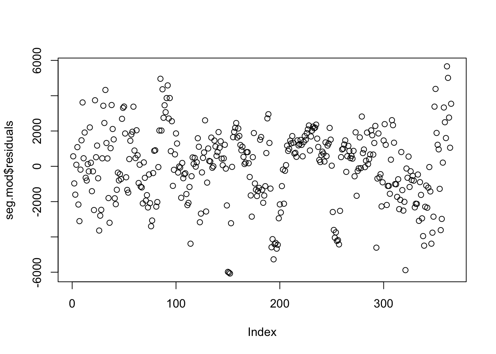
| Version | Author | Date |
|---|---|---|
| 0e3911f | maggiedouglas | 2026-03-23 |
# plot original data with fit
plot(seg.mod, col = 'black', res = TRUE, conf.level = .95, shade = T, res.col = adjustcolor("steelblue", alpha.f = 0.3), )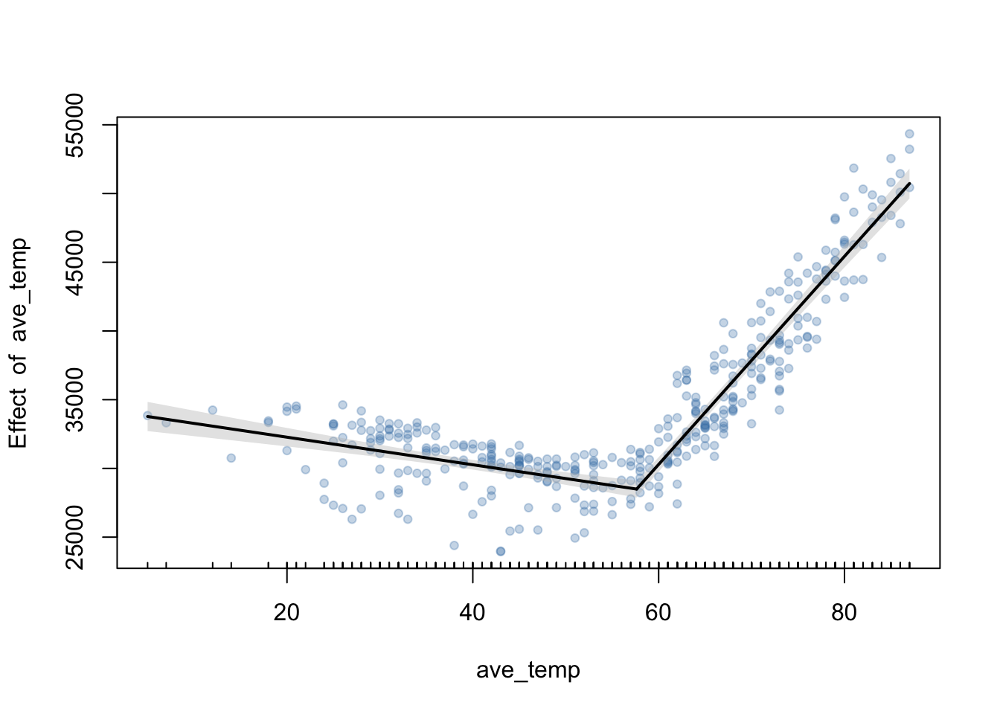
| Version | Author | Date |
|---|---|---|
| 0e3911f | maggiedouglas | 2026-03-23 |
# check for autocorrelation
## appears to have strong autocorrelation up to a week out
acf(residuals(seg.mod), lag.max = 365) # values beyond the blue dashed line indicate statistically significant autocorrelation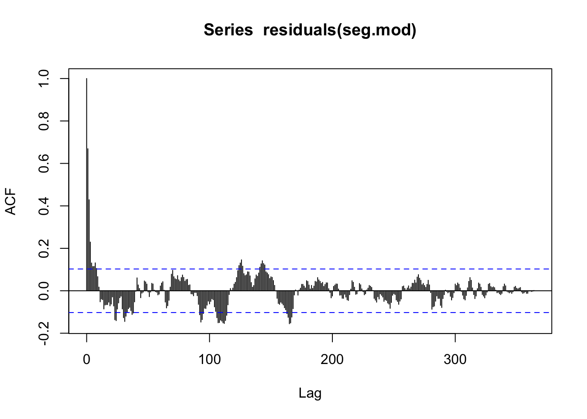
| Version | Author | Date |
|---|---|---|
| 0e3911f | maggiedouglas | 2026-03-23 |
acf(residuals(seg.mod), lag.max = 7) 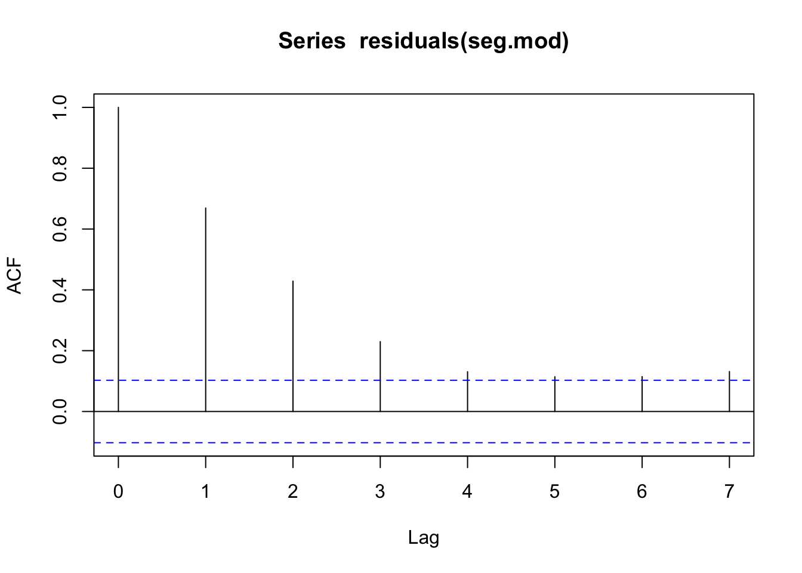
| Version | Author | Date |
|---|---|---|
| 0e3911f | maggiedouglas | 2026-03-23 |
dwtest(seg.mod) # statistical test for autocorrelation
Durbin-Watson test
data: seg.mod
DW = 0.65368, p-value < 2.2e-16
alternative hypothesis: true autocorrelation is greater than 0weekly_main <- daily_main %>%
group_by(period, week) %>%
summarize(kwh = mean(kwh),
ave_temp = mean(ave_temp),
cdd_65 = mean(cdd_65),
hdd_65 = mean(hdd_65))`summarise()` has regrouped the output.
ℹ Summaries were computed grouped by period and week.
ℹ Output is grouped by period.
ℹ Use `summarise(.groups = "drop_last")` to silence this message.
ℹ Use `summarise(.by = c(period, week))` for per-operation grouping
(`?dplyr::dplyr_by`) instead.mod_wk <- lm(kwh ~ period + ave_temp, data = weekly_main)
seg.mod.wk <- segmented(mod_wk, seg.Z = ~ ave_temp, psi = 65)
summary(seg.mod.wk)
***Regression Model with Segmented Relationship(s)***
Call:
segmented.lm(obj = mod_wk, seg.Z = ~ave_temp, psi = 65)
Estimated Break-Point(s):
Est. St.Err
psi1.ave_temp 59.55 0.975
Coefficients of the linear terms:
Estimate Std. Error t value Pr(>|t|)
(Intercept) 31837.66 1108.75 28.715 < 2e-16 ***
periodSummer -4266.16 631.25 -6.758 1.20e-08 ***
periodWinter -8276.63 905.55 -9.140 2.11e-12 ***
ave_temp -53.32 25.16 -2.119 0.0389 *
U1.ave_temp 880.46 62.21 14.154 NA
---
Signif. codes: 0 '***' 0.001 '**' 0.01 '*' 0.05 '.' 0.1 ' ' 1
Residual standard error: 1636 on 52 degrees of freedom
Multiple R-Squared: 0.9211, Adjusted R-squared: 0.9135
Boot restarting based on 6 samples. Last fit:
Convergence attained in 2 iterations (rel. change 5.4522e-11)anova(seg.mod.wk)Analysis of Variance Table
Response: kwh
Df Sum Sq Mean Sq F value Pr(>F)
period 2 596121006 298060503 111.39 <2e-16 ***
ave_temp 1 432060342 432060342 161.47 <2e-16 ***
U1.ave_temp 1 596401957 596401957 222.89 <2e-16 ***
psi1.ave_temp 1 0 0 0.00 1
Residuals 52 139142306 2675814
---
Signif. codes: 0 '***' 0.001 '**' 0.01 '*' 0.05 '.' 0.1 ' ' 1slope(seg.mod.wk)$ave_temp
Est. St.Err. t value CI(95%).l CI(95%).u
slope1 -53.316 25.160 -2.1191 -103.80 -2.8286
slope2 827.140 55.928 14.7890 714.91 939.3700plot(seg.mod.wk$residuals)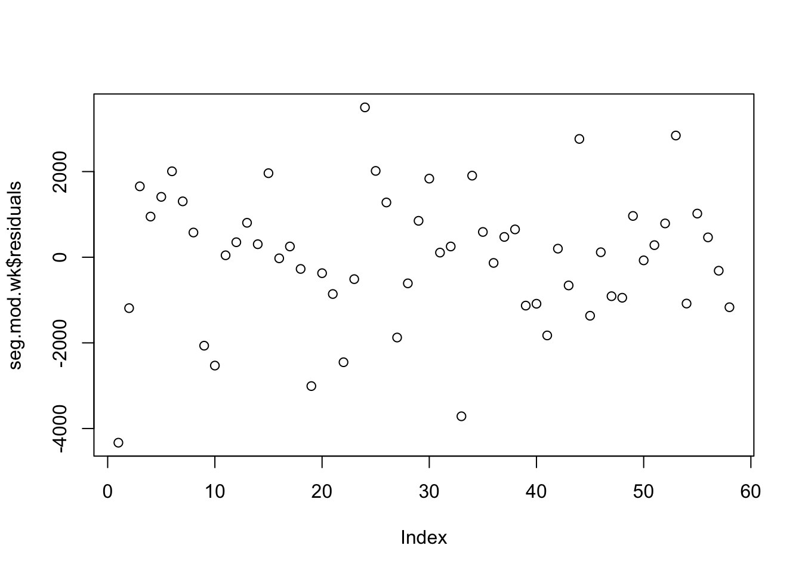
| Version | Author | Date |
|---|---|---|
| 0e3911f | maggiedouglas | 2026-03-23 |
# plot original data with fit
plot(seg.mod.wk, col = 'black', res = TRUE, conf.level = .95, shade = T,
res.col = adjustcolor("steelblue", alpha.f = 0.7), ylim = c(20000,50000),
xlab = "Temperature (deg F)", ylab = "Electricity use (kWh)")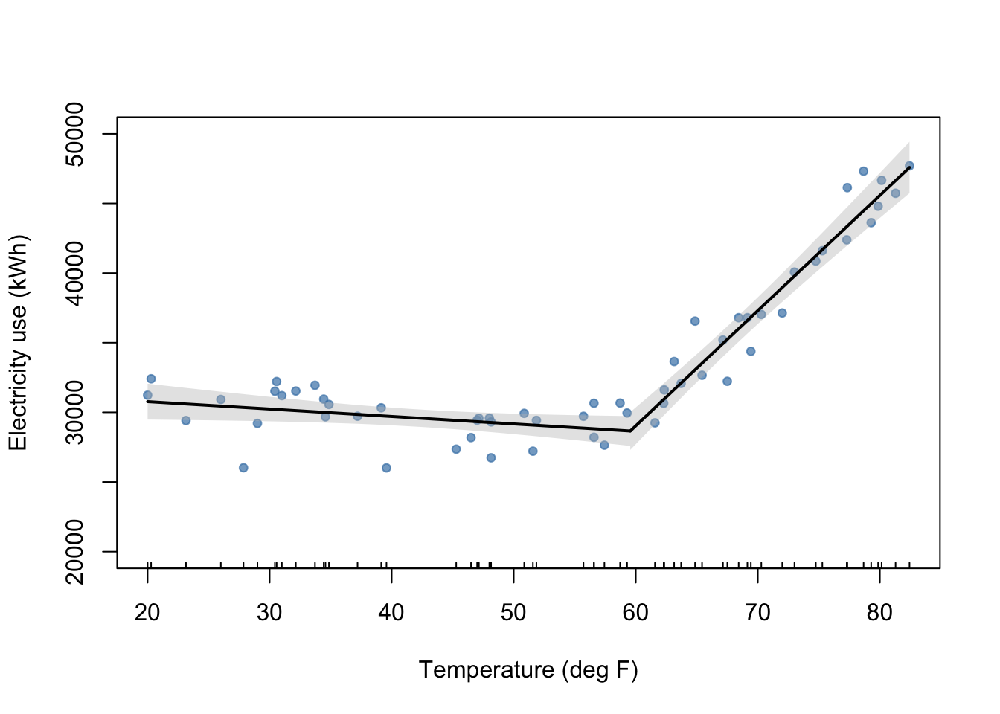
| Version | Author | Date |
|---|---|---|
| 0e3911f | maggiedouglas | 2026-03-23 |
# can we store fitted values?
fit_wk <- broken.line(seg.mod.wk, se.fit = TRUE)
weekly_main$kwh_pred <- fit_wk$fit
weekly_main$kwh_se <- fit_wk$se.fit
# check for autocorrelation
## appears to have strong autocorrelation up to a week out
acf(residuals(seg.mod.wk), lag.max = 50) # values beyond the blue dashed line indicate statistically significant autocorrelation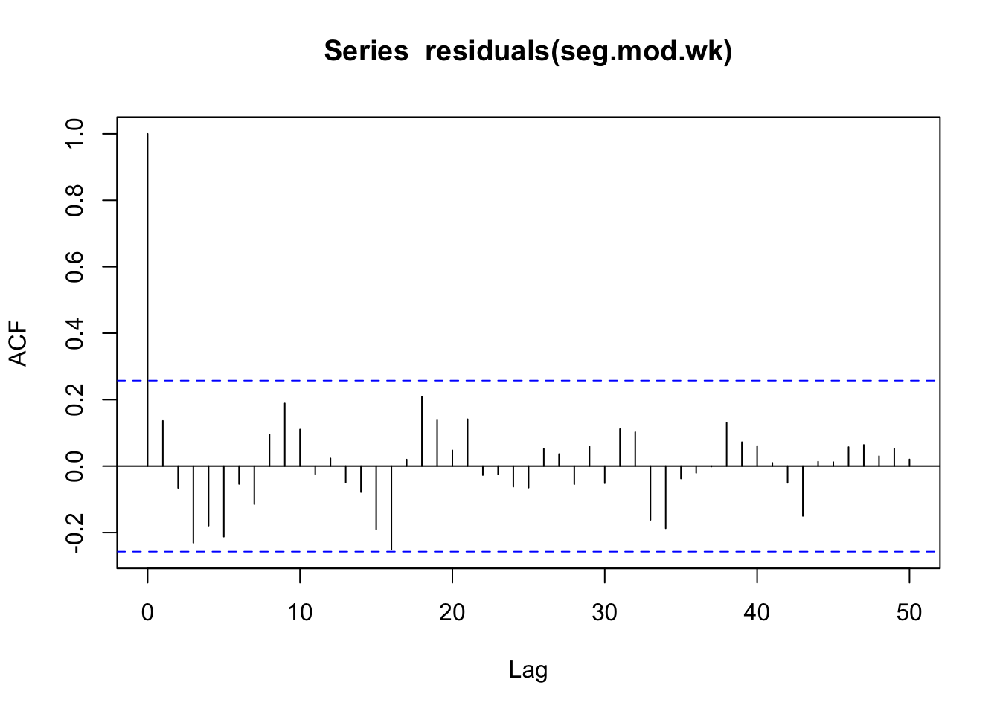
| Version | Author | Date |
|---|---|---|
| 0e3911f | maggiedouglas | 2026-03-23 |
sessionInfo()R version 4.5.2 (2025-10-31)
Platform: x86_64-apple-darwin20
Running under: macOS Ventura 13.7.8
Matrix products: default
BLAS: /Library/Frameworks/R.framework/Versions/4.5-x86_64/Resources/lib/libRblas.0.dylib
LAPACK: /Library/Frameworks/R.framework/Versions/4.5-x86_64/Resources/lib/libRlapack.dylib; LAPACK version 3.12.1
locale:
[1] en_US.UTF-8/en_US.UTF-8/en_US.UTF-8/C/en_US.UTF-8/en_US.UTF-8
time zone: America/New_York
tzcode source: internal
attached base packages:
[1] stats graphics grDevices utils datasets methods base
other attached packages:
[1] car_3.1-5 carData_3.0-6 lmtest_0.9-40 zoo_1.8-15
[5] visreg_2.8.0 tseries_0.10-60 segmented_2.2-1 nlme_3.1-168
[9] MASS_7.3-65 lubridate_1.9.5 forcats_1.0.1 stringr_1.6.0
[13] dplyr_1.2.0 purrr_1.2.1 readr_2.2.0 tidyr_1.3.2
[17] tibble_3.3.1 ggplot2_4.0.2 tidyverse_2.0.0 workflowr_1.7.2
loaded via a namespace (and not attached):
[1] gtable_0.3.6 xfun_0.56 bslib_0.10.0 processx_3.8.6
[5] lattice_0.22-7 callr_3.7.6 tzdb_0.5.0 quadprog_1.5-8
[9] vctrs_0.7.1 tools_4.5.2 ps_1.9.1 generics_0.1.4
[13] curl_7.0.0 xts_0.14.2 pkgconfig_2.0.3 RColorBrewer_1.1-3
[17] S7_0.2.1 lifecycle_1.0.5 compiler_4.5.2 farver_2.1.2
[21] git2r_0.36.2 getPass_0.2-4 httpuv_1.6.16 htmltools_0.5.9
[25] sass_0.4.10 yaml_2.3.12 Formula_1.2-5 later_1.4.8
[29] pillar_1.11.1 jquerylib_0.1.4 whisker_0.4.1 cachem_1.1.0
[33] abind_1.4-8 tidyselect_1.2.1 digest_0.6.39 stringi_1.8.7
[37] splines_4.5.2 rprojroot_2.1.1 fastmap_1.2.0 grid_4.5.2
[41] cli_3.6.5 magrittr_2.0.4 withr_3.0.2 scales_1.4.0
[45] promises_1.5.0 timechange_0.4.0 TTR_0.24.4 rmarkdown_2.30
[49] httr_1.4.8 quantmod_0.4.28 otel_0.2.0 hms_1.1.4
[53] evaluate_1.0.5 knitr_1.51 rlang_1.1.7 Rcpp_1.1.1
[57] glue_1.8.0 rstudioapi_0.18.0 jsonlite_2.0.0 R6_2.6.1
[61] fs_1.6.7